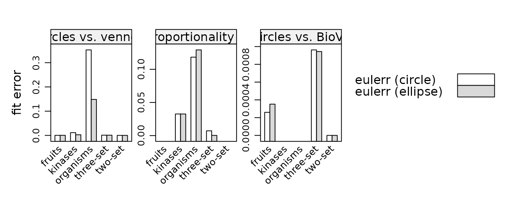
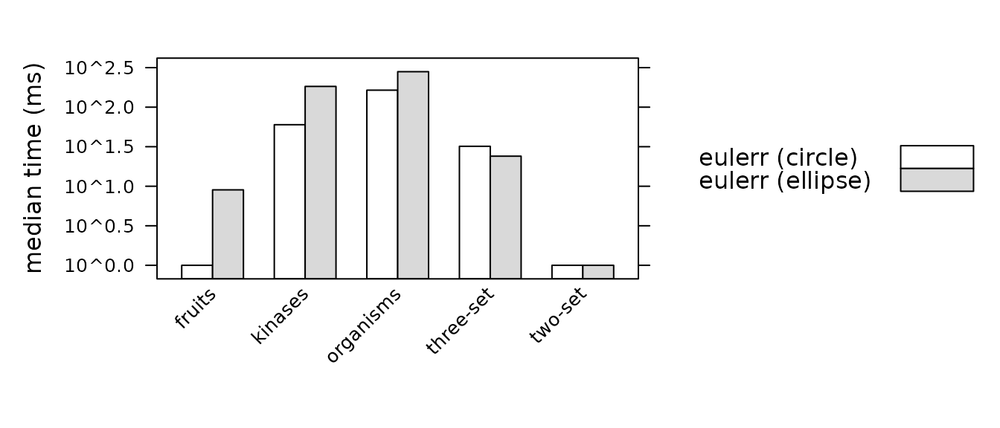

Comparison with other packages
Johan Larsson
2026-06-22
Source:vignettes/comparison.Rmd
comparison.RmdThis vignette compares eulerr with the other R packages that genuinely fit area-proportional Euler and Venn diagrams, both quantitatively (accuracy and speed) and qualitatively (features and scope).
What counts as a competitor
An area-proportional diagram is one in which each region’s area is made proportional to the quantity it represents. Surprisingly few R packages actually solve this geometric fitting problem. Most Venn/Euler packages draw fixed, schematic shapes and encode quantities through labels or color instead of area.
On CRAN and Bioconductor, the packages that really fit area-proportional diagrams are:
-
eulerr — circles, ellipses, or axis-aligned
rectangles/squares via numerical optimization; reports
stressanddiagErrorgoodness-of-fit statistics. - venneuler — Wilkinson’s circle algorithm (Wilkinson 2012); circles only; Java-based (depends on rJava).
- nVennR — the nVenn algorithm (Pérez-Silva et al. 2018); quasi-proportional, n-dimensional diagrams built from irregular polygons. Distributed via GitHub.
- BioVenn — accurate 2–3 circle diagrams from identifier lists (Hulsen 2021).
- vennplot — 2D circles and 3D spheres for 2–3 sets (Xu et al. 2017); currently dormant on CRAN.
- VennDiagram — a drawing package whose scaled mode is genuinely area-proportional for two circles only (Chen and Boutros 2011).
The last section lists the many packages that are not area-proportional fitters and explains why they are excluded.
How accuracy is measured
Comparing fitters fairly is subtle because they optimize different objectives. A package that minimizes overall squared error will look bad if scored on the single worst region, and vice versa. We therefore compare per objective: for each competitor we configure eulerr to optimize the same objective and score both packages on the same metric.
To make the metric identical across packages, we ignore each
package’s self-reported diagnostics and instead recompute the fit from
its realized geometry. We turn the fitted shapes into polygons,
compute the area of every disjoint region with polyclip,
and evaluate eulerr’s own statistics on those areas:
- stress — the normalized residual sum of squares from venneuler, , with .
- diagError — the largest absolute difference between a region’s realized and target proportion, (from eulerAPE, (Micallef and Rodgers 2014)).
Here
is the input size of region
and
its realized area. Both statistics are scale-invariant, so packages that
work in different coordinate systems remain comparable. We benchmark on
a mix of small hand-built configurations and harder cases derived from
eulerr’s bundled fruits and organisms
datasets, plus a five-set example.
The three comparisons are:
| Comparison | Competitor optimizes | eulerr setting | Scored on |
|---|---|---|---|
| A | overall fit (stress) |
loss = "stress", circles |
stress |
| B | region proportionality |
loss = "diag_error", circles |
diagError |
| C | overlap areas (2–3 circles) |
loss = "stress", circles |
stress |
In each comparison eulerr’s default ellipse fit is
included as a reference (eulerr (ellipse)): ellipses have
more degrees of freedom than circles and typically fit better, but the
head-to-head against each circle-based competitor uses eulerr’s circle
mode.
Accuracy
The stored results were generated without any competitor package installed, so only eulerr’s own numbers are shown below. Install venneuler, BioVenn, and nVennR and re-run
data-raw/benchmarks.Rfor the full comparison.
A: circles vs. venneuler — lower stress is better.
| eulerr (circle) | eulerr (ellipse) | |
|---|---|---|
| two-set | 4.1e-18 | 4.1e-18 |
| three-set | 0.00096 | 0.00091 |
| fruits | 0.00026 | 0.00034 |
| organisms | 0.35 | 0.15 |
| kinases | 0.011 | 0.0027 |
B: region proportionality vs. nVennR — lower diagError is better.
| eulerr (circle) | eulerr (ellipse) | |
|---|---|---|
| three-set | 0.0072 | 0.00032 |
| organisms | 0.12 | 0.13 |
| kinases | 0.033 | 0.033 |
C: circles vs. BioVenn — lower stress is better.
| eulerr (circle) | eulerr (ellipse) | |
|---|---|---|
| two-set | 4.1e-18 | 4.1e-18 |
| three-set | 0.00096 | 0.00094 |
| fruits | 0.00026 | 0.00035 |

Fit error by dataset and package, faceted by comparison. Lower is better. Each competitor is matched against eulerr configured for the same objective.
Speed
Runtimes are the median wall-clock time of repeated fits on the
machine that generated the results (see sessionInfo in the
stored meta). They are indicative rather than definitive —
venneuler pays a fixed JVM cost, and absolute numbers depend on hardware
— but they show the broad picture.
Median fit time (ms), by dataset and package:
| eulerr (circle) | eulerr (ellipse) | |
|---|---|---|
| two-set | 1.0 | 1.0 |
| three-set | 32.0 | 24.0 |
| fruits | 1.0 | 9.0 |
| organisms | 164.0 | 281.0 |
| kinases | 60.0 | 183.0 |

Median fit time (ms, log scale) by dataset and package.
Feature comparison
Accuracy and speed are only part of the story. The table below summarizes how the packages differ in scope and capabilities.
| Package | Shapes | Max sets | Proportional | Input | Fit reported | Key dependency | Source |
|---|---|---|---|---|---|---|---|
| eulerr | circle, ellipse, rectangle, square | many | approximate | vectors, data frames, matrices, tables, lists | stress, diagError, regionError | none (Rust) | CRAN |
| venneuler | circle | many | approximate | named vector, data frame | stress | rJava / Java | CRAN |
| nVennR | irregular polygon | many | quasi | lists | none | C++ | GitHub |
| BioVenn | circle | 2–3 | accurate (2–3) | ID lists | none | none | CRAN |
| vennplot | circle (2D), sphere (3D) | 2–3 | approximate | counts, lists | none | Rcpp, rgl | CRAN (dormant) |
| VennDiagram | circle | 4 (2 scaled) | 2 sets only | counts | none | none | CRAN |
A few points worth drawing out:
- eulerr is the only package that fits ellipses (and rectangles/squares). Ellipses can represent many three-set configurations exactly that are impossible with circles, which is why eulerr’s ellipse fits score better than every circle-based package on the harder datasets above.
- eulerr and venneuler are the only packages that report a numeric goodness-of-fit. Without one, it is impossible to know how much a diagram distorts the data — and area-proportional diagrams with three or more sets almost always distort it to some degree.
- eulerr has no system dependencies beyond a Rust toolchain at build time, whereas venneuler requires a working Java installation through rJava, which is a common source of installation trouble.
- nVennR achieves closer proportionality only by abandoning smooth shapes for irregular polygons. This is the central trade-off: smooth, interpretable shapes (eulerr, venneuler) versus exact topology with jagged regions (nVennR).
Excluded packages
Many widely cited Venn/Euler packages are not area-proportional fitters and are therefore outside the scope of this comparison.
| Package | Reason |
|---|---|
| venn, ggVennDiagram, ggvenn, RVenn, gplots | Draw fixed, schematic shapes; quantity shown via labels or color, not area |
| UpSetR | Not a Venn/Euler diagram at all (UpSet matrix/bar charts) |
| colorfulVennPlot | Archived from CRAN; only a 2-set helper, never a general fitter |
| VennMaster | Area-proportional, but a standalone Java application — not an R package |
| Vennerable | Area-weighted, but hosted on R-Forge/GitHub, not CRAN or Bioconductor |
Caveats
- “Area-proportional” is a spectrum. For three or more sets, exact solutions with circles or ellipses are often geometrically impossible, so eulerr and venneuler produce approximate diagrams; nVennR reaches closer proportionality only by giving up smooth shapes. Any honest comparison should report fit error, not merely whether a diagram was produced — which is exactly what the accuracy section above does.
- Self-description bias. The BioVenn documentation claims it is “the only R package that can automatically generate an accurate area-proportional Venn diagram,” which is not literally true; eulerr, venneuler, and vennplot also produce accurate area-proportional circle diagrams.
-
Reproducibility. The numbers here come from one
machine and one set of package versions. To regenerate them, install the
competitors (
venneuler,BioVenn, andnVennRfrom GitHub) and rundata-raw/benchmarks.R.